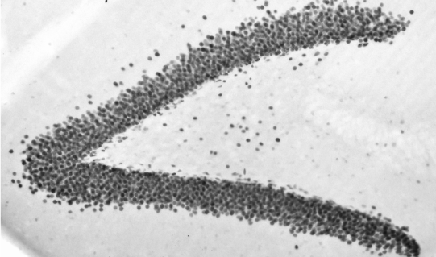
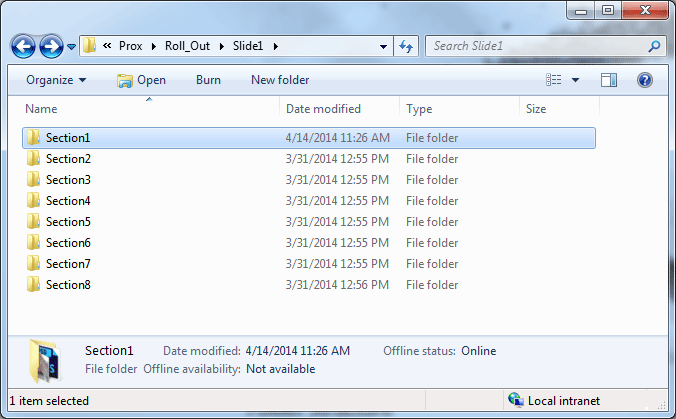
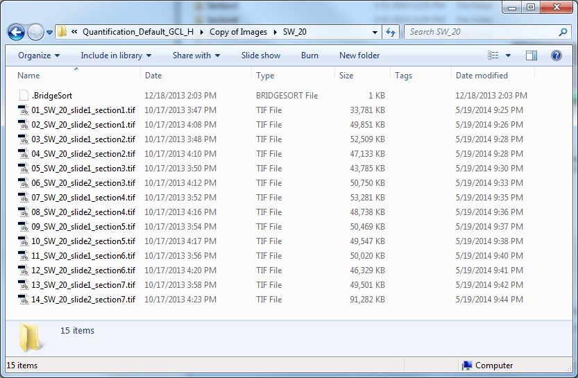
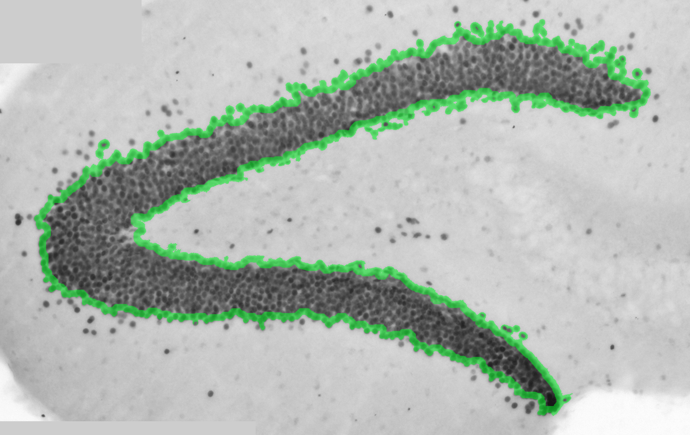
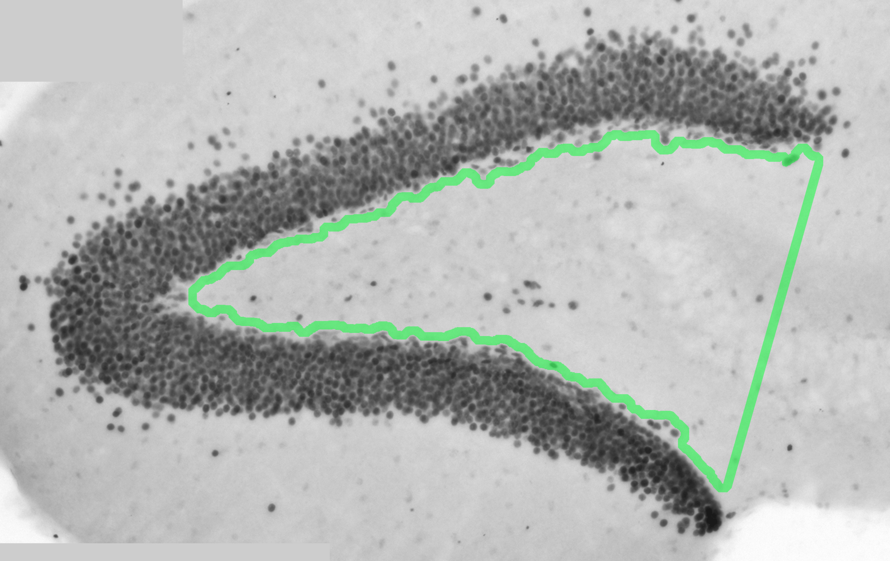

These are a series of scripts in JavaScript for Photoshop, Python scripts and macros in ImageJ to estimate the number of immuno-reactive Prox1 cells in the hilus of the dentate gyrus of the hippocampus in mice.
The scripts can be used individually . You can go ahead and copy each script or copy the ones you are interested in.
Immunohistochemistry
The first step is to perform Immunohistochemistry for Prox1 in free floating brain sections as explained in Myers et al 2013. Then sections need to be dehydrated an coverslipped in permount and photographed with a brightfield microscope and digital camera.Photographs need to be taken at a 20X magnification.

Fig.1 - Prox1 immunohistochemsitry from a mouse hippocampal section .
Folder Structure
For each animal you need to create a folder for each section and label each as "Section1","Section2", etc.
Take the pictures of each section and save them on the corresponding folder.

Fig. 2 - Folders
Scripts
For each of the fallowing steps there is a folder with macros and scripts.
Note: These steps need to be completed for each animal.
Photomerge the images by using the JavaScript script from Step1 in Photoshop.After photomerging make sure the sections are in order and make sure to add the label each section with a number that corresponds to the position of each section.

Fig. 3 - Sections
After photomerging all the images. Draw the regions of interests(ROI)s as indicated in Step1.5.

Fig. 4 - Example of the GCL region of interest.

Fig. 5 - Example of the Hilus region of interest.
Then proceed to create ROI binary images from the alpha channels using the JavaScript in Step2 called "Fill_All.jsx".
In the scripts change the name of the ROIs that you wish to create binary images. To create an ROI that corresponds to two ROIs uncomment the line that extends the selection.
After creating the binary images run the ImageJ macro in Step3andStep4
Then create the thresholded images using an ImageJ macro in Step5.
Then create txt files with the number of cells in each section by using the macro in Step6.
Orgnaize the count txt data into a csv file using the Python script inStep8.
Orgnaize the area txt data into a csv file using the Python script in Step7.
Finally, orgnize and plot the data of all the animals by using the Python script in Step9.
Note: All the scripts are a work in progress and were written for my use. There might be more than one script in each folder. This may correspond to different ROIs or different groups of animals.
Example, in these scripts I had the group "P16_P30_P60" and "Cre Bax", and for ROIs I had "H","Hilus", and "SGZ".